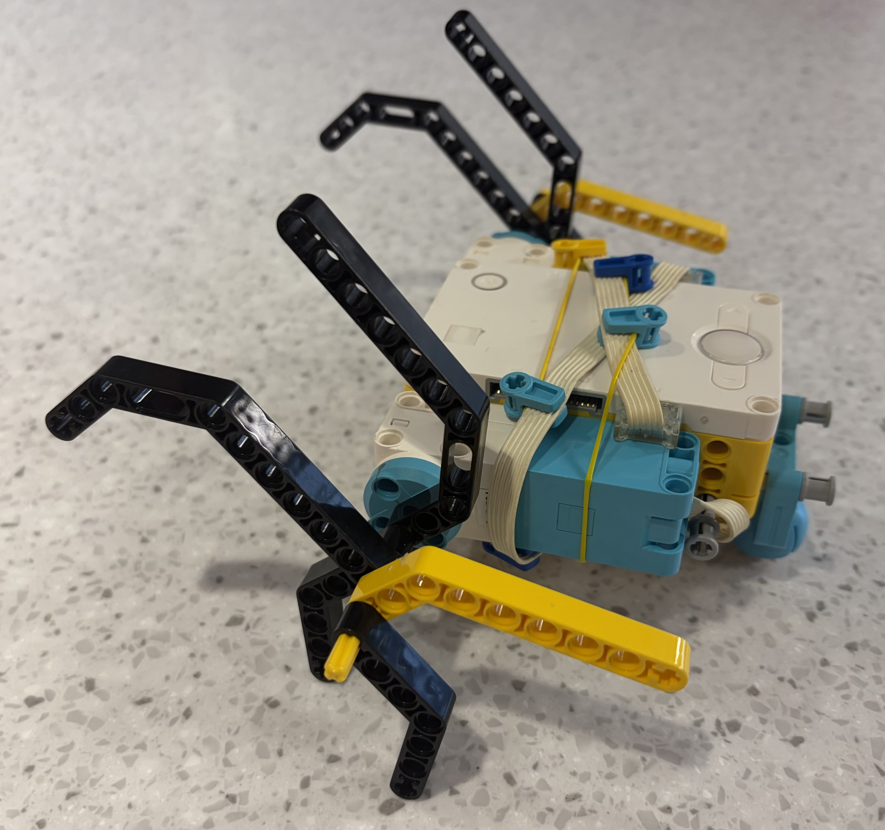
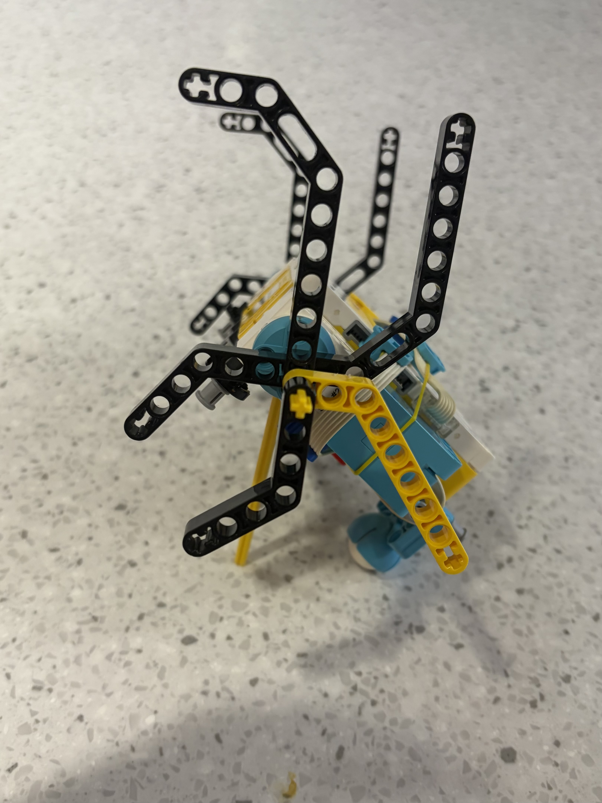

For this project, we were assigned to design a robot inspired by biomimicry. I designed a robot inspired by a gorilla, using its strong, stable support and natural movement as the basis for the robot's structure and function.